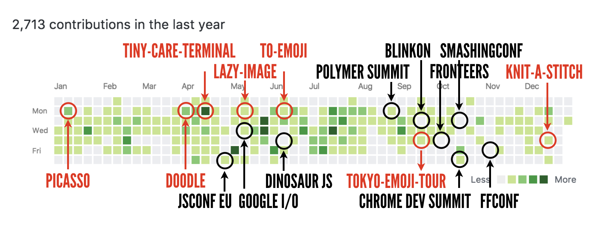
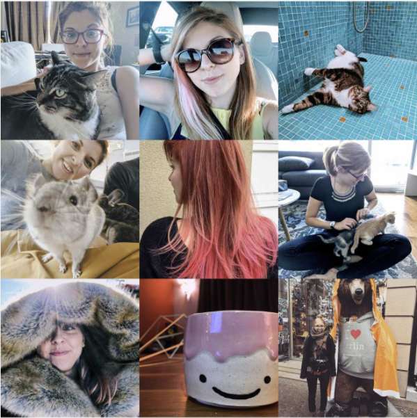

You can tell I hate writing year in reviews because this one is really, really late. I tend to hate bragging, and I definitely hate introspective and, in particular, I always think I am underperforming (and that’s fine). However, that’s usually not true, and writing a year in review forces me to see the awesome things I did, so even if I did end up underperforming, at least I can learn from that. That’s the whole point of post-mortems, right?
As usual, here’s life as GitHub saw it. Red text is projects I’ve shipped, black text is conferences I’ve spoken at. Technically I didn’t speak at Blinkon, but I spoke to people at it so hey, counting it.

The reason why this post mortem is important to me is that before writing it, I literally thought this year was bad and I just “did fewer things”. But that’s not actually true!
-
I wrote less code than in 2016 (2713 vs 3153 contributions), but that’s totally irrelevant? GitHub contributions are a fake idea, and I’m the first one to tell you this, so I don’t know why I get worked up about them every year. I contributed to weird branches (which don’t get counted), and did a lot of weird explorations that obviously never got merged. I planned things. I wrote design documents. I reviewed design documents. I formed strong opinions. I learnt Redux. Eat it, contributions graph.
-
I gave fewer talks than in 2016 (7 vs 8), but I enjoyed conferences more. I went to a conference where I only hung out with badass women. I went to Railscamp, where I had no wifi and canoed and wore a headlamp like a giant dork. I MC-ed Chrome Dev Summit with Mariko, which was scary, and intimidating and incredibly fun.
-
I built more side projects (10 vs 9). One of them got featured in The Verge!
-
I worked fewer weekends (16 vs 28 days. Goal: 0). And I don’t mean on work-work, I mean, at all. On the weekends I play Stardew Valley, or make pottery, or knit, or watch an entire season of Riverdale because I can. Maybe this means I’ll work on fewer side-things, and maybe this will hurt my career, but it will keep me happier, not burnt out, and less likely to murder my partner. And that’s p important.
-
I joined the Unicode Emoji committee. YES. Really. It took me a year of emails, and even now I’m pretty sure I’m the least useful member out of the whole bunch, but that’s ok, because I can get better!
-
I became broadly aware of a lot of technical things, but not necessarily deeply aware of them. I am really confident I understand Web Components, emoji and web fonts really well, but I still don’t really know how any of our polyfills work, or how to fix a sizeable bug in Polymer, or what to do about async/await and stuff. In the last couple of months of the year I started learning more about
http/2 pushandlink rel=preload, but I feel it’s a broad sort of understanding. I don’t know yet what kind of person I want to be: “I understand something really well in all its intimate aspects which makes me an expert”, or “I understand many things well enough to have opinions and advice, but not well enough to be an expert in any of them”. This is the thing I want to figure out this year.
I learnt how to skateboard. I saw one of my favourite bands in concert. I ordered a coffee entirely in Japanese. I learnt how to make mugs and bowls and bottles, with my hands. I made new friends, and I didn’t piss off any of my current ones (that I know of). I nuzzled dogs, and cats, and an otter. I still didn’t spoil Star Wars. I turned 32.

I don’t do resolutions because they don’t really work for me, but I heard a good one from a coworker: do 12 new things next year.
So, I will.
❤️
// also available: 2016 and 2015 years in review, that were actually on time.